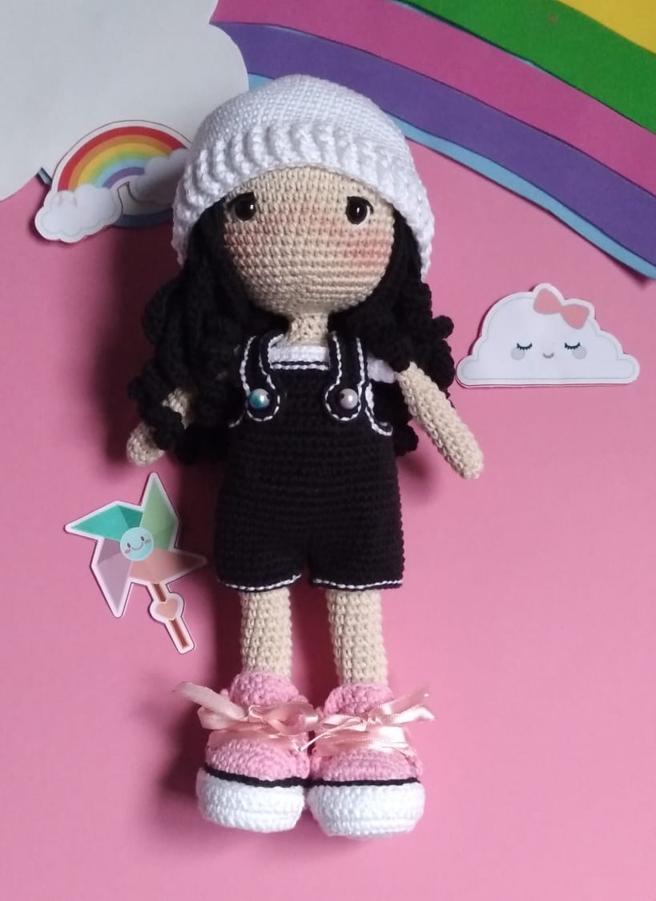

O que é Amigurumi
Amigurumi é uma técnica japonesa para criar pequenos bonecos feitos de crochê ou tricô. Apesar da popularidade de bichos de pelúcia e bonecas, a técnica também é usada para objetos como utensílios domésticos e comida de características antropomórficas. Wikipédia.
Um pouco da minha arte
Juju
